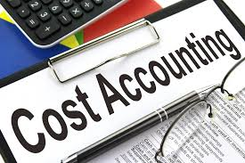

Imagine two students selling the same product. Both receive many customers. At the end of the month, one makes a profit while the other loses money. The difference is that one understands costs. Cost Accounting helps people understand how much it truly costs to produce goods and services and how to make profitable decisions.
Cost Accounting is the branch of accounting that focuses on recording, analyzing, and controlling costs. It helps businesses determine production costs, improve efficiency, and maximize profits.
As an SHS student, you may study topics such as:
Cost Accounting can lead to careers such as:
Many businesses fail not because they lack customers but because they fail to manage costs properly. Understanding costs is one of the most important skills in business. A company that controls its costs effectively can survive competition and grow faster.
Get a copy of:
A practical guide designed to help students understand programmes, university courses, careers, opportunities, and future pathways.